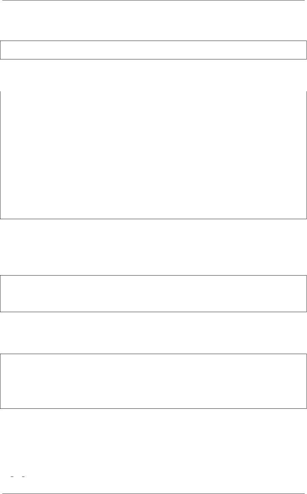

《Python Cookbook》第三版, Release 2.0.0
其次，默认参数的值应该是不可变的对象，比如 None、True、False、数字或字符
串。特别的，千万不要像下面这样写代码：
def spam(a, b=[]): # NO!
...
如果你这么做了，当默认值在其他地方被修改后你将会遇到各种麻烦。这些修改会
影响到下次调用这个函数时的默认值。比如：
>>> def spam(a, b=[]):
... print(b)
... return b
...
>>> x=spam(1)
>>> x
[]
>>> x.append(99)
>>> x.append('Yow!')
>>> x
[99, 'Yow!']
>>> spam(1)# Modified list gets returned!
[99, 'Yow!']
>>>
这种结果应该不是你想要的。为了避免这种情况的发生，最好是将默认值设为
None，然后在函数里面检查它，前面的例子就是这样做的。
在测试 None 值时使用 is 操作符是很重要的，也是这种方案的关键点。有时候大
家会犯下下面这样的错误：
def spam(a, b=None):
if not b: # NO! Use 'b is None'instead
b=[]
...
这么写的问题在于尽管 None 值确实是被当成 False，但是还有其他的对象 (比如长
度为 0的字符串、列表、元组、字典等)都会被当做 False。因此，上面的代码会误将
一些其他输入也当成是没有输入。比如：
>>> spam(1)# OK
>>> x=[]
>>> spam(1, x) # Silent error. x value overwritten by default
>>> spam(1,0)# Silent error. 0 ignored
>>> spam(1,'')# Silent error. '' ignored
>>>
最后一个问题比较微妙，那就是一个函数需要测试某个可选参数是否被使用者传递
进来。这时候需要小心的是你不能用某个默认值比如 None、0或者 False 值来测试用
户提供的值 (因为这些值都是合法的值，是可能被用户传递进来的)。因此，你需要其
他的解决方案了。
为 了 解 决 这 个 问 题， 你 可 以 创 建 一 个 独 一 无 二 的 私 有 对 象 实 例， 就 像 上 面
的no value 变量那样。在函数里面，你可以通过检查被传递参数值跟这个实例是否
9.5. 7.5 定义有默认参数的函数 214